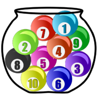

Wahrscheinlichkeit - da war doch was
Zufallsexperimente erkennen
Ein Zufallsexperiment liegt vor, wenn folgende vier Bedingungen erfüllt sind:
Das Zufallsexperiment kann verschiedene Ergebnisse haben.
Alle möglichen Ergebnisse können vor dem Experiment angegeben werden.
Welches Ergebnis eintreten wird, lässt sich nicht mit Sicherheit voraussagen.
Das Experiment kann unter gleichen Bedingungen beliebig oft wiederholt werden.
Beispiele für Zufallsexperimente sind:
Würfeln, eine Münze werfen, Lotto spielen, einen Gegenstand blind aus einem Sack ziehen….
Aufgabe 1
Ein Zufallsexperiment ist ein Vorgang, dessen man nicht kann. Bei einem sollen Ausgänge möglich sein und es soll unter den Bedingungen wiederholbar sein.
Eine Münze oder zählen zu Zufallsexperimenten. ist kein Zufallsexperiment, da kein Zufall im Spiel ist.
Aufgabe 2
Entscheide, ob es sich um ein Zufallsexperiment handelt.
Lose ziehen
Würfeln
Die Temperatur bestimmen, bei der Eis schmilzt
Blind eine Spielkarte aus einem Kartendeck ziehen
Die Innenwinkelsumme eines zufälligen Dreiecks bestimmen
Die Ergebnismenge eines einfachen Zufallsexperiments
Bei einem Zufallsexperiment werden die möglichen Ausgänge als Ergebnisse bezeichnet. Die Menge der möglichen Ausgänge bezeichnet man als Ergebnismenge. Sie fasst alle Ausgänge eines Zufallexperiments zusammen.
Schreibweise: \(\Omega = \{a,\;b,\;c\}\) "Die Ergebnismenge Omega besteht aus den Ergebnissen a, b und c.
Beispiele:
Eine Münze werfen hat die Ergebnismenge: \(\Omega=\{Kopf,\; Zahl\}\)
Würfeln hat die Ergebnismenge: \(\Omega=\{1\;, 2,\; 3,\;4,\;5,\;6\}\)
Eine ungerade Zahl würfeln hat die Ergebnismenge: \(\Omega=\{1\;, 3\;, 5\}\)
Aufgabe 1
Notiere die Ergebnismengen für folgende Zufallsexperimente:
- Würfeln mit folgenden Würfeln


- Man dreht folgende Glücksräder


- Man würfelt zwei “normale” Würfel und bildet anschließend die Augensumme.
Aufgabe 2
Beschreibe passende Zufallsexperimente für folgende Ergebnismengen.
\(\Omega = \{weiß,\; schwarz,\; rot,\; blau \}\)
\(\Omega = \{Niete,\; kleiner\;Gewinn,\; mittlerer\;Gewinn,\; großer\;Gewinn \}\)
\(\Omega = \{Song1,\; Song2,\; Song3,\; Song4 \}\)
Die Wahrscheinlichkeit eines Ereignisses
Ein Ereignis ist eine Teilmenge der Ergebnismenge. Ein Ereignis ist also ein möglicher Ausgang eines Zufallsexperiments, der aus einem oder mehreren Ergebnissen besteht.
Mehrere Ergebnisse können somit zu einem Ereignis zusammengefasst werden. Die Wahrscheinlichkeit dieses Ereignisses ist dabei die Summe der Wahrscheinlichkeiten der zugehörigen Ergebnisse (Summenregel).
Schreibweise: \(E=\{a\;,b\;,c\}\)
Beispiele:
Das Würfeln einer geraden Zahl kann geschrieben werden als \(E=\{2,\;4,\;6\}\) und hat die Wahrscheinlichkeit: \[P(2)+P(4)+P(6) = \frac{1}{6}+\frac{1}{6}+\frac{1}{6}=\frac{3}{6}=\frac{1}{2}\]
Das Würfeln einer Zahl kleiner 3 kann geschrieben werden als \(E=\{1,\;2\}\) und hat die Wahrscheinlichkeit: \[P(1)+P(2) = \frac{1}{6}+\frac{1}{6}=\frac{2}{6}=\frac{1}{3}\] Es gibt drei besondere Ereignisse:
Das Elementarereignis: Es enthält nur ein Ergebnis. [Eine 1 würfeln oder “Kopf” werfen.]
Das sichere Ereignis: Es enthält alle möglichen Ergebnisse und hat daher die Wahrscheinlichkeit 1. [Eine 1, 2, 3, 4, 5 oder 6 würfeln. “Kopf” oder “Zahl” werfen.]
Das unmögliche Ereignis: Es enthält kein Ergebnis. [Eine 8 würfeln oder “Rand” werfen.]
Aufgabe 1
Du hast folgende Urne. In ihr sind verschieden farbige, nummerierte Kugeln.

Als Zufallsexperiment zieht man nun eine Kugel aus der Urne. Formuliere Ereignisse, die folgende Eigenschaften erfüllen.
Die Ereignismenge umfasst 3 Ergebnisse.
Die Ereignismenge umfasst kein Ergebnis.
Die Ereignismenge umfasst 4 Ergebnisse.
Die Ereignismenge umfasst ein Ergebnis.
Die Ereignismenge umfasst 6 Ergebnisse.
Aufgabe 2
Schreibe die Ereignismengen zu folgenden Ereignissen auf.
Bei einem Würfelwurf fällt eine ungerade Zahl.
Beim Roulett wird kein schwarzes und kein rotes Feld getroffen.
Alle möglichen Geburtstage im Monat Februar für die gilt, dass sie nach dem 29.2. stattfinden.
Aus einem Skatspiel (32 Karten) wird entweder eine Herz-Karte gezogen oder ein Ass.
Aufgabe 3
Formuliere zu den folgenden zu einem Würfelwurf gehörenden Ereignismengen passende Ereignisse.
\(E=\{1,\;2,\;3\}\)
\(E=\{2,\;4,\;6\}\)
\(E=\{1\}\)
\(E=\{5,\;6\}\)
Eigenschaften der Wahrscheinlichkeit
Die Wahrscheinlichkeit eines Ereignisses liegt immer zwischen 0 und 1. Dabei bedeutet eine Wahrscheinlichkeit von 0, dass das Ereignis sicher nicht eintreten kann. Es ist ein unmögliches Ereignis. Bei einer Wahrschenlichkeit von 1 wiederum trifft das Ereignis sicher ein. Das bezeichnet man als sicheres Ereignis.
Die Summe der Wahrscheinlichkeiten aller möglichen Ergebnisse eines Zufallsexperiments ist 1.
Es gilt die Summenregel: Die Wahrscheinlichkeit eines Ereignisses ist die Summe der Wahrscheinlichkeiten der zugehörigen Ergebnisse.
Schreibweise: \(P(A)=0,5\) “Die Wahrscheinlichkeit des Ereignisses A ist 0,5.”
Vielleicht hilft es…:
Zur Veranschaulichung von Wahrscheinlichkeiten kann man sich z.B. einen Maßstab vorstellen:

Das empirische Gesetz der großen Zahlen
Wird ein Zufallsexperiment sehr oft durchgeführt, so stabilisieren sich die relativen Häufigkeiten eines Ergebnisses um einen festen Wert. Dieser Wert kann dann als Schätzwert für die Wahrscheinlichkeit des Ergebnisses verwendet werden.
Umgekehrt gilt:
Ist die Wahrscheinlichkeit eines Ergebnisses aus theoretischen Überlegungen bekannt (beispielsweise muss die Wahrscheinlichkeit mit einem fairen Würfel eine 1 zu würfeln \(1 \over 6\) sein, da alle Augenzahlen gleich wahrscheinich sein müssen) - dann gibt diese Wahrscheinlichkeit an, welche relative Häufigkeit eines Ergebnisses bei sehr vielen Wiederholungen erwartbar ist.
Laplace-Experimente und ihre Wahrscheinlichkeiten
Ein Zufallsexperiment, bei dem alle Ergebnisse die gleiche Wahrscheinlichkeit haben, heißt Laplace-Experiment. Sind n Ergebnisse möglich, so ist die Wahrscheinlichkeit jedes einzelnen Ergebnisses \(1 \over n\).
Beispiele für Laplace-Experimente sind würfeln (jede Augenzahl hat die gleiche Wahrscheinlichkeit \(1 \over 6\)) oder auch eine Münze werfen (die möglichen Ausgänge “Kopf” und “Zahl” haben beide die Wahrscheinlichkeit \(1 \over 2\)).
Bei einem Laplace-Experiment hat ein Ereignis die Wahrscheinlichkeit: \[P(E)=\frac{Anzahl\;der\;Ergebnisse,\;die\;zum\;Ereignis\;gehören}{Anzahl\;aller\;möglichen\;Ergebnisse}\]